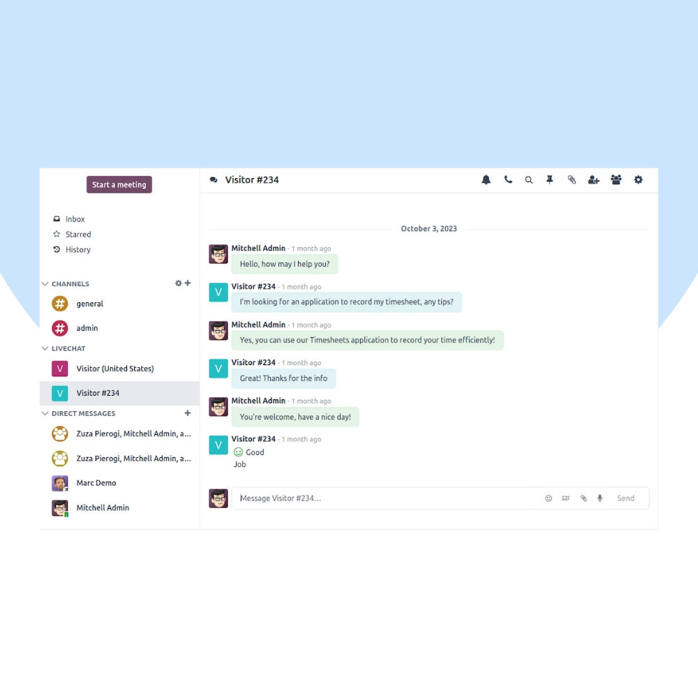
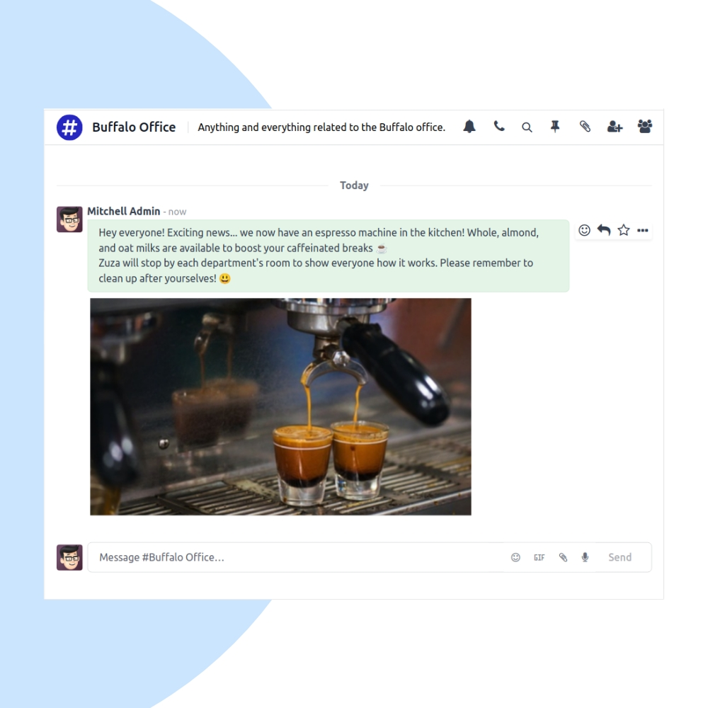
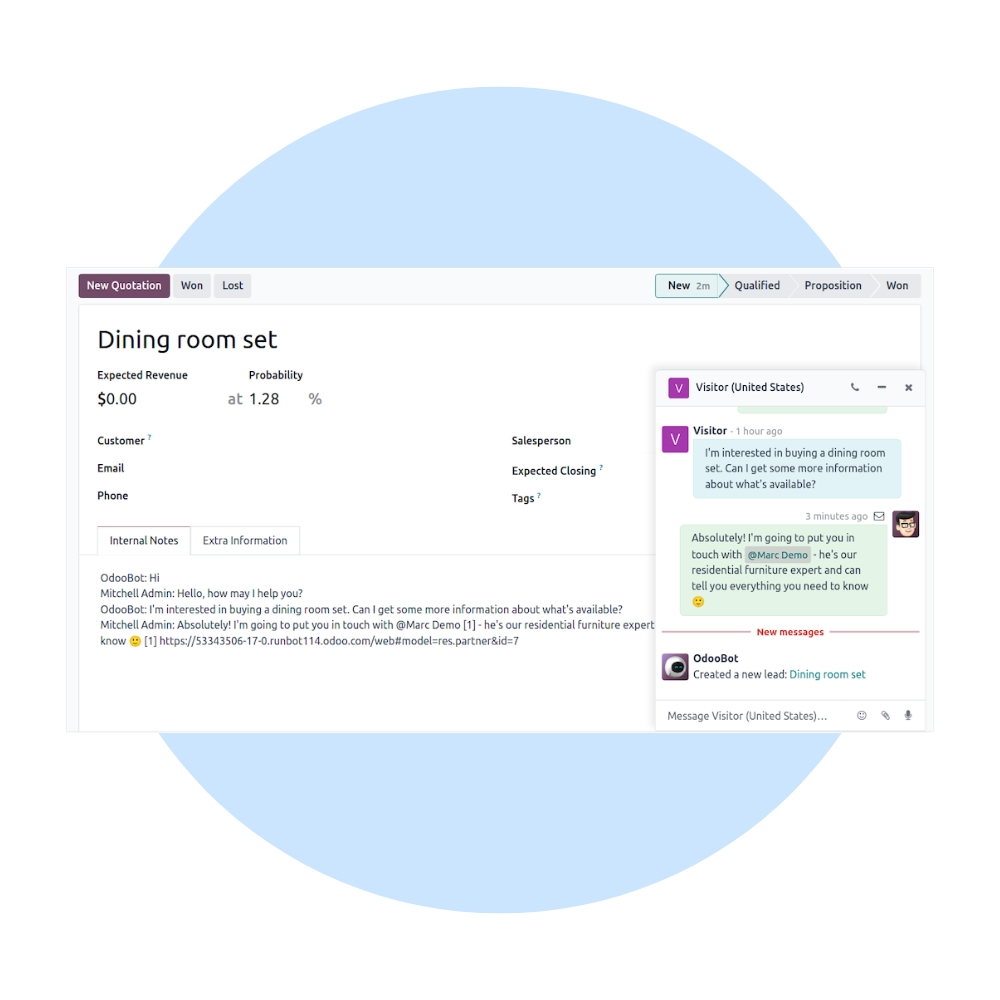

Collaborate seamlessly with Odoo Discuss. We help organizations enable real-time messaging, team channels, and activity-based discussions directly inside their Odoo ERP system.
We configure Odoo Discuss to match your team structure, communication rules, and workflows. Integrate discussions seamlessly across Projects, Helpdesk, Sales, HR, and other Odoo apps.


Our implementation ensures fast internal communication, reduced email dependency, and better collaboration across teams and departments.
Chat with team members in real time.
Create channels for teams & topics.
Stay updated on tasks & records.
Share documents and links easily.
Discuss directly on records & tasks.
Connected across all Odoo applications.
We help you optimize internal communication, improve collaboration adoption, and streamline notifications across teams.
